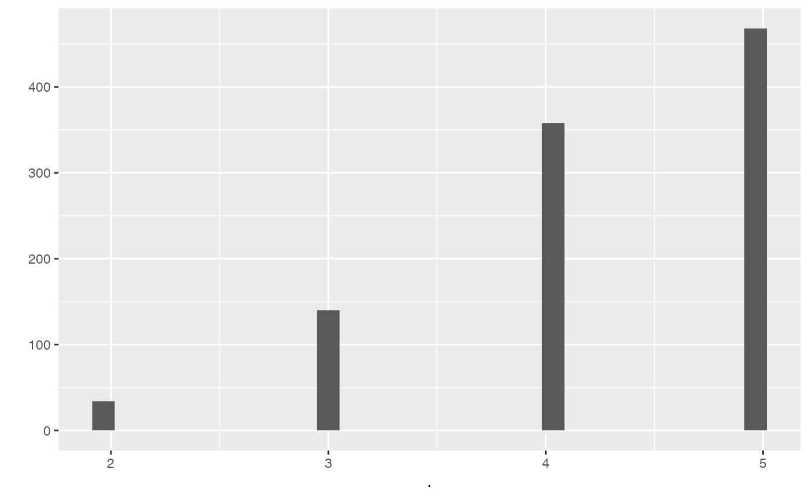
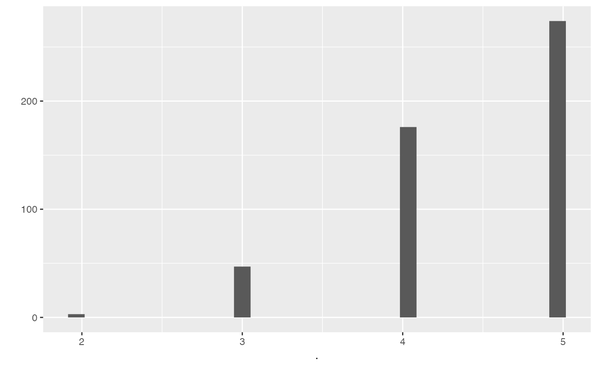
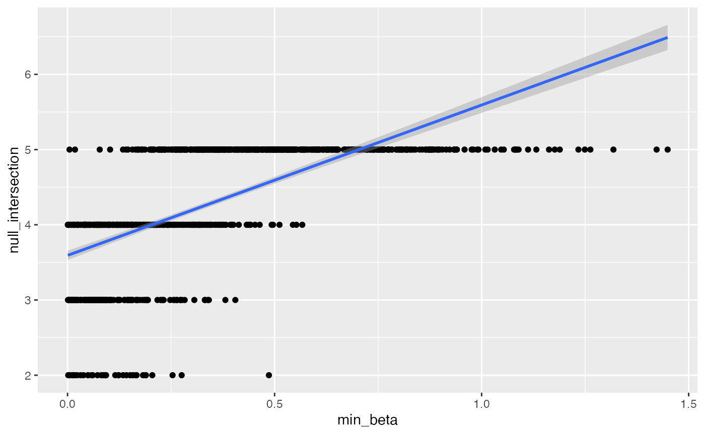
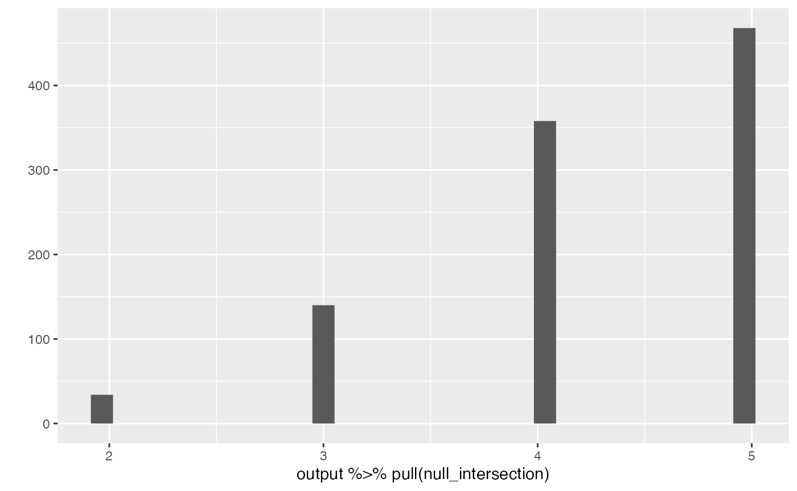
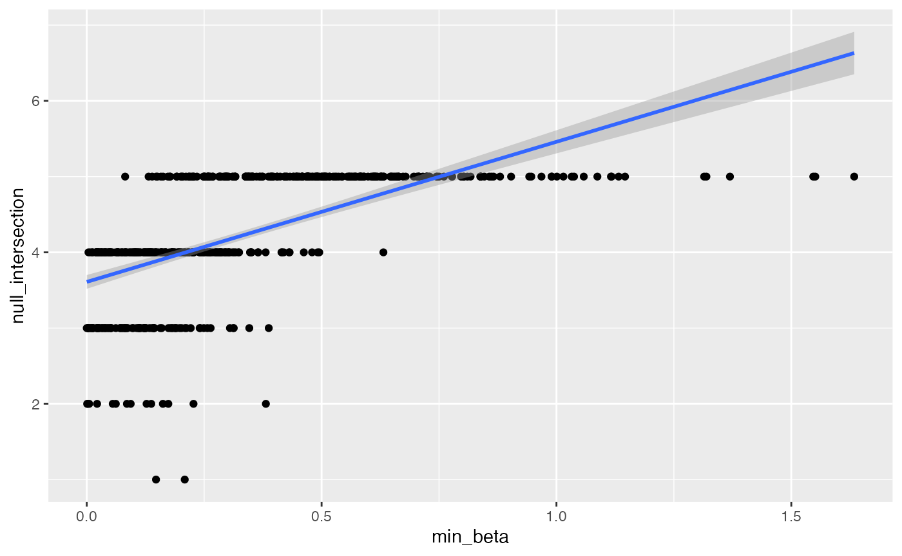
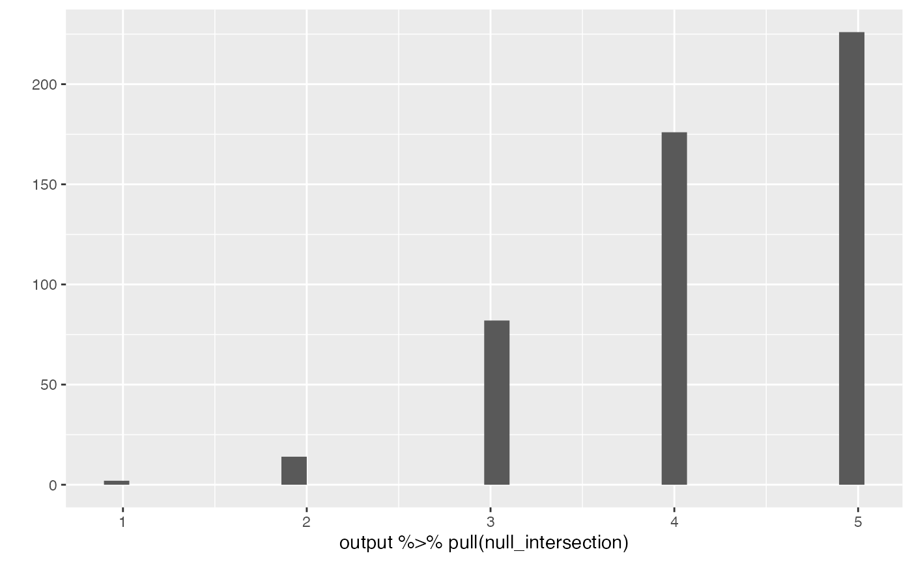

Philosophy based on cross-validation
In chapter 7 of Hastie, Tibshirani, and
Friedman (2009)
the authors emphasize cross-validation estimates the expected prediction
error (or generalization error) of a method. This is in
contrast to estimating such errors for a specific model. There
is a line of work that makes use of cross-validation and inherits its
inferential focus on a method rather than a specific model chosen by
that method (Wasserman and Roeder 2009; Meinshausen, Meier, and
Bühlmann 2009; Meinshausen and Bühlmann 2010; R. D. Shah and Samworth
2013) including the focus of this vignette which was proposed
by R. D. Shah and Bühlmann (2018). This paper
and its R implementation (2021) roughly
attempt to answer the question:
Does this method (typically) result in models with a good fit, or does it fail to capture signal that an alternate method could (typically) detect?
If the first method does fit well, then the residuals from that method should (typically) look like pure noise. On the other hand, if an alternate method can predict the residuals with good accuracy (better than noise) that would be evidence the first method is failing to capture some signal. Hence the name RPtests, based on residual prediction. The exact details depend on several (groups of) decisions:
Probability modeling assumptions (foundational, and we will not question these here).\[ \mathbf{y} = \mathbf{X} \beta + \sigma \epsilon \]
The first method, or null method. We want to know if this method is good enough. We will focus on using the lasso (1996) to select variables in a (potentially high-dimensional) linear model. (The high level idea could be applied using other methods as well but that would require changing some other details in the implementation).
One or more secondary or alternate methods that could be chosen depending on what type of model misspecification we are concerned about. We will focus on whether we should include more predictor variables, but another possibility is to search for non-linear relationships. (An alternate method could be a hybrid or ensemble of several methods, but we will not explore this here).
Analysis/pipeline choices including how to tune each method, estimating the variance of the noise, number of bootstrap samples, and so on. (We will also not question these here).
We’ll focus on one of the main cases investigated in (R. D. Shah and Bühlmann 2018): testing a linear model against an alternative that includes additional predictors. To determine if the alternative predicts the residuals significantly better than noise the paper uses a parametric-residual bootstrap described below, but first we consider an important point about the dimension of the first (null) model.
Low vs high-dimensions
In the low dimensional linear model case, the scaled residuals
\[ \hat{\mathbf{R}} = \frac{(\mathbf{I} - \mathbf{P})\mathbf{y}}{\|(\mathbf{I} - \mathbf{P})\mathbf{y}\|_2} \]
are a pivotal quantity under the null hypothesis that the model fits
(and \(\mathbf P = \mathbf{X}(\mathbf{X}^T
\mathbf{X})^{-1} \mathbf{X}^T\) is the projection or hat matrix).
In this case the distribution of the residuals does not depend on any
unknown parameters, so we can use that distribution for valid hypothesis
tests or other inferences. This is the basis of the standard \(F\)-test for goodness-of-fit, the one
reported at the end of a summary(lm(y ~ x)).
set.seed(1)
x <- runif(50)
y <- x + rnorm(50)
summary(lm(y ~ x))
#>
#> Call:
#> lm(formula = y ~ x)
#>
#> Residuals:
#> Min 1Q Median 3Q Max
#> -1.9115 -0.5747 -0.1463 0.5103 2.2936
#>
#> Coefficients:
#> Estimate Std. Error t value Pr(>|t|)
#> (Intercept) 0.06272 0.29121 0.215 0.8304
#> x 1.06779 0.48788 2.189 0.0335 *
#> ---
#> Signif. codes: 0 '***' 0.001 '**' 0.01 '*' 0.05 '.' 0.1 ' ' 1
#>
#> Residual standard error: 0.9297 on 48 degrees of freedom
#> Multiple R-squared: 0.09074, Adjusted R-squared: 0.0718
#> F-statistic: 4.79 on 1 and 48 DF, p-value: 0.03352However, this does not work in the high-dimensional case, so (2018) use a combination of previous lasso theory and new technical results to prove the residuals from lasso can be used in a similar way (with slight modifications) to construct tests. The theory relies on fairly standard but strong conditions sufficient for the lasso to estimate the support and signs of the true \(\beta\) with high probability, but (as is typical in lasso theory literature) simulations show good empirical performance under more general settings where the strong sufficient conditions are relaxed.
We briefly note that Janková et al. (2020) apply the same basic idea of predicting residuals to high-dimensional generalized linear models by using the Pearson residuals
\[ \hat R_i = \frac{Y_i - \mu(x_i^T \hat \beta)}{\sqrt{V(x_i^T \hat \beta)}} \]
instead, where \(\mu\) and \(V\) are the conditional mean and variance functions, respectively. However, beyond the basic idea there is much additional work involved in this other case so we do not consider it more here.
Lasso details
To calibrate the test, we need a distribution to compare the accuracy measure (typically) achieved by a null model. In the high-dimensional case the null model is assumed to be selected by lasso with cross-validation. The authors propose iterating the whole procedure multiple times to average over the randomness induced by cross-validation itself. Note that this makes more sense when our inferential focus is the method and not a specific model chosen by the method. Below is a restatement of Algorithm 1 in (2018), the parametric-residual bootstrap procedure for estimating a null distribution. For \(b = 1, \ldots, B\):
- Replace \(\mathbf{y}\) with \(\mathbf{\hat y}\) from the original null
model plus simulated residuals \(\mathbf{\zeta}^{(b)} \sim N(0, \mathbf{I}_{n
\times n})\). (Simulating a new response from the null
model).
- Fit sqrt-lasso (2011) using the above simulated \(\mathbf{y}^{(b)}\) and subtract new fit
\(\mathbf{\hat y}^{(b)}\). (Simulating
residuals achieved by alternative method).
- Normalize simulated residuals and compute some accuracy measure,
such as RSS. (Obtain bootstrap distribution for testing).
Note that the sqrt-lasso method can be replaced with other fitting procedures if we are interested in different alternatives, for example by using a tree based method if we are interested in predictive interactions.
Exercise: why not just predict normalized residuals \((\mathbf{y} - \mathbf{\hat y})/\hat \sigma\) and compare to accuracy in predicting \(\mathbf{\zeta}^{(b)}\)? (Consider dimensions).
Simulations and examples
library(RPtests)
library(hdi) # riboflavin dataset
#> Loading required package: scalreg
#> Loading required package: lars
#> Loaded lars 1.3
library(purrr)
library(tidyverse)
#> ── Attaching packages ─────────────────────────────────────── tidyverse 1.3.1 ──
#> ✔ ggplot2 3.3.6 ✔ dplyr 1.0.9
#> ✔ tibble 3.1.8 ✔ stringr 1.4.1
#> ✔ tidyr 1.2.0 ✔ forcats 0.5.1
#> ✔ readr 2.1.2
#> ── Conflicts ────────────────────────────────────────── tidyverse_conflicts() ──
#> ✖ dplyr::filter() masks stats::filter()
#> ✖ dplyr::lag() masks stats::lag()
devtools::load_all() # this shouldn't be necessary?
#> ℹ Loading unbiasedgoodness
library(unbiasedgoodness)We continue focusing on the high-dimensional linear model and as an alternative to a selected model we consider whether more variables should be included. Since (2018) are not trying to do selective inference in their simulations it seems there is no model selection involved in choosing the hypotheses. Type 1 error control is shown in simulations set up for the null to be true in all instances, rather than doing model selection and subsetting to instances where the null holds (as in selective inference).
set.seed(1)
n <- 100
p <- 200
s0 <- 5
sim_data <- rXb(n, p, s0, xtype = "equi.corr")
x <- sim_data$x
beta <- sim_data$beta
y <- x %*% beta + rnorm(n)
# True support
which(beta != 0)
#> [1] 1 2 3 4 5
gof_RPtest(x, y)
#> Warning in gof_RPtest(x, y): Sparsity of 1 chosen by cv.glmnet, forcing to 2 for RPtest compatibility
#> $selected_support
#> [1] 5 139
#>
#> $alt_support
#> [1] 3 4 85 133 166 190
#>
#> $pval_lasso
#> [1] 0.02
#>
#> $pval_OLS
#> [1] 0.02
#>
#> $pval_full
#> [1] 0.02Iterate
#devtools::load_all() # this shouldn't be necessary?
library(unbiasedgoodness)
set.seed(1)
n <- 100
p <- 200
s0 <- 5
m <- 1.2
b <- 5
simulate_gof_instance(m, b = 10, n, p, s0)
#> max_corr min_beta s_null s_alt null_intersection alt_intersection null
#> 1 0.5636253 0.03821633 4 6 4 4 FALSE
#> alt pval_lasso pval_OLS pval_full
#> 1 FALSE 0.04 0.04 0.52
#devtools::load_all() # this shouldn't be necessary?
library(unbiasedgoodness)
set.seed(1)
niters <- 500
output <- simulate_gof(niters, m, b = 10, n, p, s0)
#> Warning in gof_RPtest(x, y): Sparsity of 1 chosen by cv.glmnet, forcing to 2 for RPtest compatibility
#> Warning in gof_RPtest(x, y): Sparsity of 1 chosen by cv.glmnet, forcing to 2 for RPtest compatibility
output |>
summarize(null = mean(null),
alt = mean(alt),
s_null = mean(s_null),
s_alt = mean(s_alt))
#> null alt s_null s_alt
#> 1 0.452 0.548 8.756 7.774
output |>
ggplot(aes(pval_OLS)) +
geom_histogram() +
facet_grid(~null)
#> `stat_bin()` using `bins = 30`. Pick better value with `binwidth`.
output |>
ggplot(aes(pval_full)) +
geom_histogram() +
facet_grid(~null)
#> `stat_bin()` using `bins = 30`. Pick better value with `binwidth`.
output |>
ggplot(aes(pval_lasso)) +
geom_histogram() +
facet_grid(~null)
#> `stat_bin()` using `bins = 30`. Pick better value with `binwidth`.
checking
output %>% pull(null_intersection) %>% qplot()
#> `stat_bin()` using `bins = 30`. Pick better value with `binwidth`.
output %>% pull(alt_intersection) %>% qplot()
#> `stat_bin()` using `bins = 30`. Pick better value with `binwidth`.
output |> pull(s_alt) |> qplot()
#> `stat_bin()` using `bins = 30`. Pick better value with `binwidth`.
output |> ggplot(aes(max_corr, null_intersection)) +
geom_point() + geom_smooth(method = "lm")
#> `geom_smooth()` using formula 'y ~ x'
output |> ggplot(aes(min_beta, null_intersection)) +
geom_point() + geom_smooth(method = "lm")
#> `geom_smooth()` using formula 'y ~ x'
output %>% pull(null_intersection) |> qplot()
#> `stat_bin()` using `bins = 30`. Pick better value with `binwidth`.
RPtests controls selective error
To the best of my knowledge it is not known whether RPtests is valid for selective inference since it was not designed or proven to do so. This empirical demonstration may be a novel result showing that, at least in the conditions simulated here, the method does control selective errors.